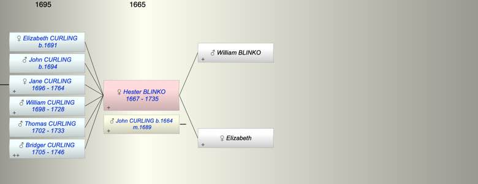

| [Index] |
| Hester BLINKO (1667 - 1735) |
|  |
| b. 1667 at Deal |
| m. 26 Dec 1689 John CURLING (1664 - ) at St Andrew Canterbury |
| d. 12 Sep 1735 aged 68 |
| Parents: |
| William BLINKO |
| Elizabeth |
| Children (6): |
| Elizabeth CURLING (1691 - ) |
| John CURLING (1694 - ) |
| Jane CURLING (1696 - 1764) |
| William CURLING (1698 - 1728) |
| Thomas CURLING (1702 - 1733) |
| Bridger CURLING (1705 - 1746) |
| Grandchildren (4): |
| Nicholas HOOPER (1721 - 1781), Jane HOOPER (1727 - 1730), John HOOPER (1729 - 1730), Jane HOOPER (1734 - ) |
| Events in Hester BLINKO (1667 - 1735)'s life | |||||
| Date | Age | Event | Place | Notes | Src |
| 1667 | Hester BLINKO was born | Deal | Note 1 | ||
| 26 Dec 1689 | 22 | Married John CURLING (aged 25) | St Andrew Canterbury | Note 2 | |
| 1691 | 24 | Birth of daughter Elizabeth CURLING | St Laurence | Note 3 | |
| 1694 | 27 | Birth of son John CURLING | St Laurence | Note 4 | |
| 1696 | 29 | Birth of daughter Jane CURLING | St Laurence | Note 5 | |
| 1698 | 31 | Birth of son William CURLING | St Laurence | Note 6 | |
| 1702 | 35 | Birth of son Thomas CURLING | St Laurence | Note 7 | |
| 1705 | 38 | Birth of son Bridger CURLING | Note 8 | ||
| 27 Sep 1728 | 61 | Death of son William CURLING (aged 30) | St Laurence | Note 9 | |
| 03 Mar 1733 | 66 | Death of son Thomas CURLING (aged 31) | St Laurence | Note 10 | |
| 12 Sep 1735 | 68 | Hester BLINKO died | Note 11 | ||
| Personal Notes: |
| http://list.english-heritage.org.uk/resultsingle_print.aspx?uid=1372282&showMap=1&showText=1Group of 6 headstones south of chancel of Church of St. Laurence GV II Group of 6 headstones. William Dear, d.1719. About 2 feet high, with crudely scrolled head with equally crude lillies and hourglass. Robert Long, d.1723. About 3 feet high, with the same motifs as the last, but damaged. William Curling, d.1725. About 3 feet high, with Rocaille scrolled shoulders, and broken outline, with cherubs heads and sunburst motifs. Esther (d.1730) and John Curling. About 2 1/2 feet high, with double segmental head with 2 skulls in filleted surround. Moses Read, d.1743. About 3 feet high, with foliate scrolled shoulders and pediment shaped cornice with cherub's head and swirling clouds. William Darling, d.1753. About 3 1/2 feet high, the plaque with festooned sides, with foliate scrolled shoulders to scrolled egg and tongue cornice and cherub's heads in sunburst. |
| Created on a Mac™ using iFamily for Mac™ on 8 Oct 2023 |